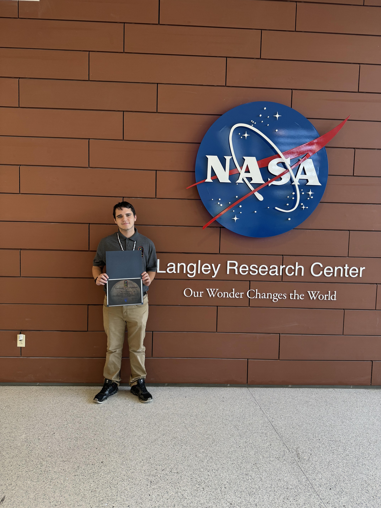
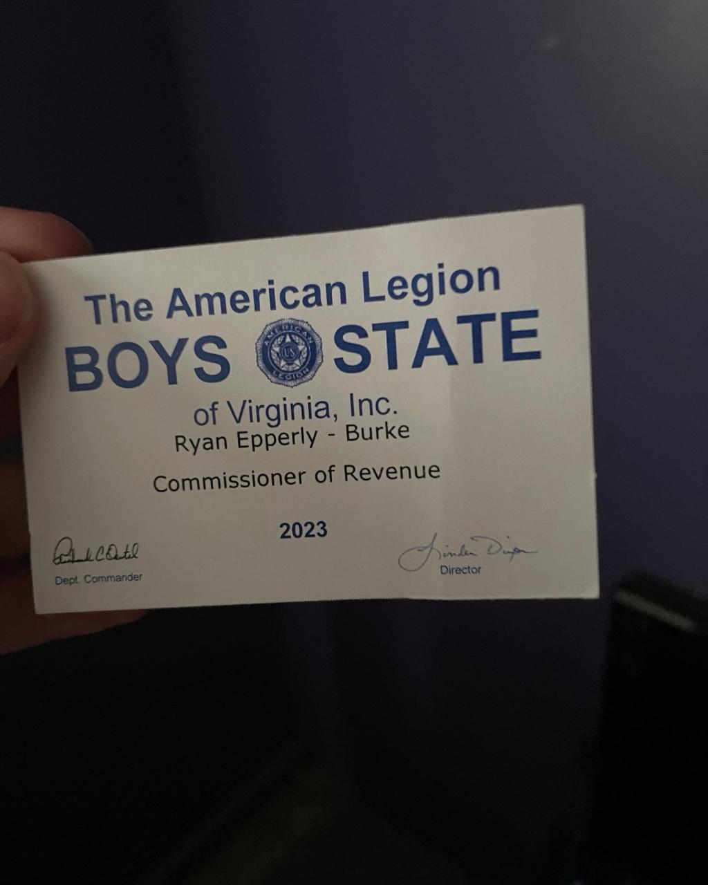
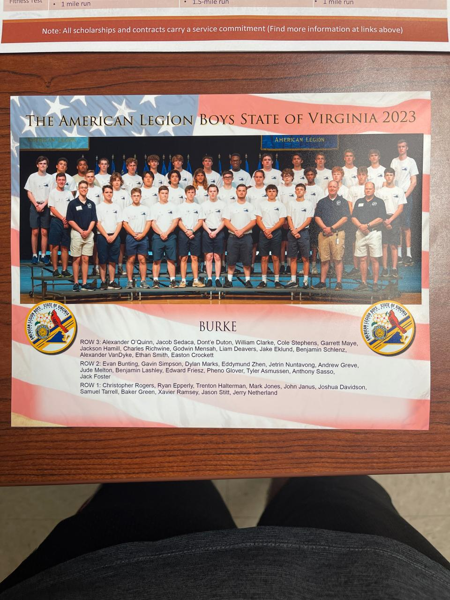
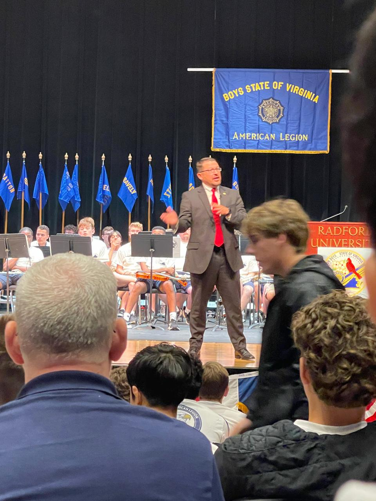
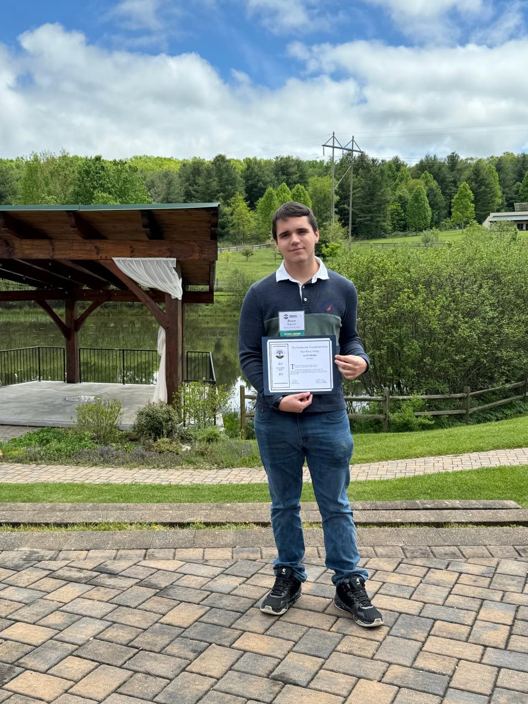
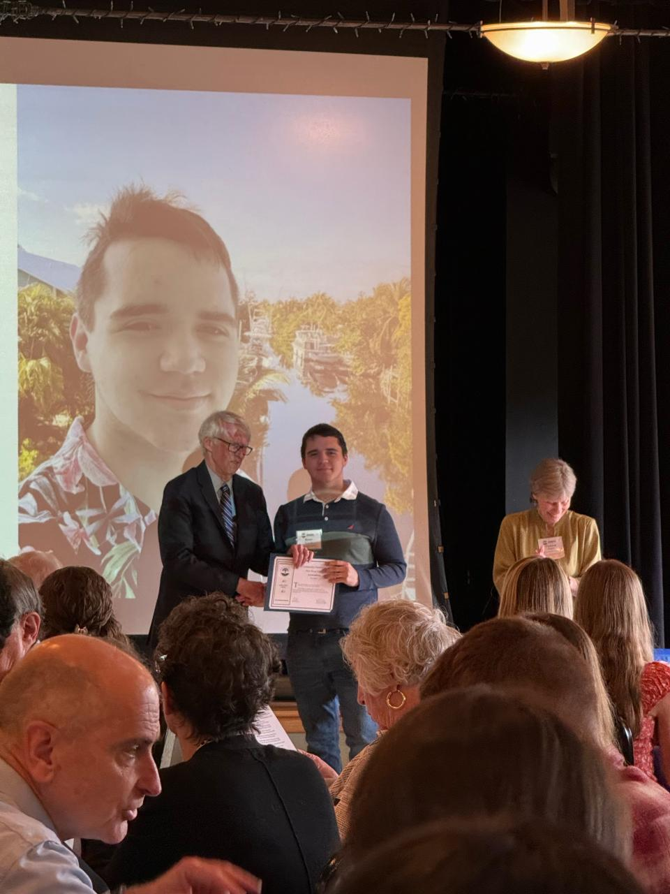

About Me
I am a dedicated Aerospace Engineering student at Virginia Tech specializing in Dynamics, Control, and Estimation. With hands-on experience spanning computational orbital dynamics, geospatial intelligence, and mechanical design, I am passionate about solving complex engineering challenges. My background blends rigorous academic research with practical, industry-standard testing and regulatory compliance.
Academic & Research Projects
Starlink Sentinel: Autonomous LEO Collision Avoidance
The Objective
Track orbital trajectories and define parameters for autonomous collision avoidance protocols in densely populated Low Earth Orbit (LEO) environments.
The Approach
Engineered a 6-DOF computational physics simulator in MATLAB featuring J2 perturbations and an Extended Kalman Filter (EKF) for highly accurate state estimation.
The Results
Successfully modeled autonomous low-thrust collision avoidance (COLA) maneuvers. View the source code on GitHub.
e.g., Trajectory simulation or EKF state estimation graphs.
Martian Habitat Radiation Shielding Analysis
The Objective
Evaluate and optimize material radiation shielding efficiency to protect astronauts during long-duration Martian surface missions.
The Approach
Developed simulation models in MATLAB to analyze varying material densities and simulate solar particle/cosmic ray radiation penetration metrics.
e.g., Material density vs. radiation penetration comparison.
Engineering Experience

Engineering Intern
Design & Prototyping
Designed a line continuity tool in SolidWorks, optimizing geometry to eliminate sharp edges and prevent cord snagging.
Testing & Hardware
Engineered a custom load cell amplifier enclosure. Executed 150+ Mecmesin/hydraulic tensile tests and performed 10 operational drop tests.
Quality Control
Developed a QC program referencing PIA documents and MIL-STD-849D, improving inspection efficiency by 20%.
e.g., A render of the line continuity tool or load cell enclosure.

Space Systems Intern
Research & Analysis
Collaborated with NASA to evaluate critical infrastructure resilience and geospatial risk factors. Authored technical papers on climate-induced aviation density altitude penalties and evaluated LEO satellite constellation resilience (Starlink) to enhance disaster situational awareness.
Hardware Sandbox & Rapid Prototyping
Personal Fabrication & 3D Printing
Beyond the classroom, I am an active maker. I utilize my Bambu Lab P2S to rapidly prototype custom mechanical assemblies and iterate on personal designs.
I rely on Fusion 360, SolidWorks, and Autodesk Inventor for parametric modeling, bridging the gap between theoretical physics and physical, functional hardware.
Show off your coolest mechanical builds here!
Credentials, Honors & Extracurriculars
Leadership & Extracurriculars
Authored a comprehensive policy paper outlining legal frameworks (Outer Space Treaty, Artemis Accords) and regulatory compliance (ALARA) for the STRIDE mission to Mars. Led ~50 scholars across four teams. [View Published Paper]

Elected by peers to manage tax policies and municipal budgeting for the simulated city of Burke.



Preparing to participate in the aircraft Design/Build/Fly (DBF) competition in Fall 2026.
Honors & Awards
-
Ray E. and Mary B. Epperly Family Fund Scholarship (May 2024)
Awarded by CFNRV for scholastic excellence and dedication to engineering. [Press Link]

-
Steel Dynamics Scholarship (May 2024)
Awarded to support undergraduate studies based on excellent academic achievement. -
President’s Award for Educational Excellence (May 2024)
U.S. Department of Education recognition for a high cumulative GPA and rigorous coursework. -
Senior of the Month (Jan 2024)
Eastern Montgomery High School recognition for STEM leadership and community involvement.
Engineering & Software Certifications
Aviation & Modeling
- Nafi - Scalable Safety Management Systems (FAA) | View PDF
- The Recreational UAS Safety Test - TRUST (FAA) | View PDF
- Topology Optimization Using Ansys Mechanical (Ansys) | View PDF
- Canva For Beginners (Simplilearn) | View PDF
IT, AI & Data Analysis
- A Quick Introduction to Machine Learning (Cognitive Class) | View PDF
- Building AI-Powered Chatbots Without Coding (IBM) | View PDF
- Interactive Dashboards and Data Visualization in Excel (Alison) | View JPG
- Introduction to Image Generation (Simplilearn) | View PDF
- IT Management - Building Information Systems (Alison) | View PNG
- Information Systems Development and Society (Alison) | View PNG
- Fundamentals of Open-Source Intelligence (Alison) | View PNG
- Root Cause Analysis Tools and Techniques (Alison) | View PNG
Space Weather & Emergency Management Certifications
Atmospheric Science (COMET)
- COSMIC: Atmospheric Remote Sensing | View PDF
- Satellite Remote Sensing Capabilities for Ocean Color | View PDF
- Space Weather Basics, 3rd Edition | View PDF
- Radio Wave Propagation | View PDF
- Met 101: Introduction to the Atmosphere | View PDF
- Alberta Clipper Case Exercise | View PDF
- Communicating Climate Change Scenarios | View PDF
- Facilitating Stakeholder Discussions | View PDF
- Using Climatological Products in Common Operations | View PDF
Emergency Operations (FEMA / Other)
- IS-66: Preparing the Nation for Space Weather Events | View PDF
- IS-111.a: Livestock in Disasters | View PDF
- IS-120.c: An Introduction to Exercises | View PDF
- IS-130.a: How to be an Exercise Evaluator | View PDF
- IS-235.c: Emergency Planning | View PDF
- IS-238: Critical Concepts of Supply Chain Flow | View PDF
- IS-247.c: IPAWS for Alert Originators | View PDF
- IS-288.a: Role of Voluntary Organizations | View PDF
- IS-700.b: National Incident Management System | View PDF
- IS-922.a: Applications of GIS for Emergency Management | View PDF
- IS-1300.a: Introduction to Continuity | View PDF
- Analyze Satellite Data to Investigate Plant Health (IBM) | View PNG
- Geospatial Infrastructure for Coastal Communities | View PDF